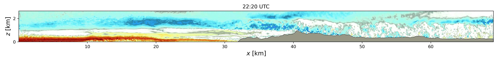

FastEddy®

FastEddy® (FE) is a large-eddy simulation (LES) model developed by the Research Applications Laboratory (RAL) at the U.S. National Science Foundation National Center for Atmospheric Research (NSF NCAR) in Boulder, Colorado, USA. The fundamental premise of FastEddy model development is to leverage the accelerated and more power efficient computing capacity of graphics processing units (GPU)s to enable not only more widespread use of LES in research activities but also to pursue the adoption of microscale and multiscale, turbulence-resolving, atmospheric boundary layer modeling into local scale weather prediction or actionable science and engineering applications.
Citations
The FastEddy code is located in an open, public GitHub FastEddy-model repository. Please cite FastEddy as follows:
Sauer, J., and D. Muñoz-Esparza. “The FastEddy resident-GPU accelerated large-eddysimulation framework: model formulation, dynamical-core validation and performancebenchmarks”. Journal of Advances in Modeling Earth Systems, vol. 12 (2020)